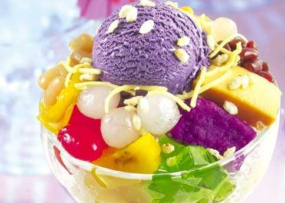

Ingredients
- 1/4 cup sweetened red beans
- 1/4 cup sweetened white beans
- 4 cups shaved ice (from about 6 cups of ice cubes)
- 1 large banana, thinly sliced
- 1/4 cup jackfruit, drained and sliced
- 1/4 cup macapuno strips, drained
- 1/4 cup nata de coco, drained
- 1/4 cup red palm seeds (Kaong), drained
- 1/4 cup green palm seeds (Kaong), drained
- 1 cup evaporated milk, divided
- 1/2 cup Cap'n Crunch with Crunch Berries cereal
- 2 scoops ube ice cream (store-bought or homemade)
Instructions
- Gather the ingredients and two tall parfait glasses.
- Place half of the sweetened red and white beans at the bottom of each glass.
- Process half the ice cubes until they resemble snow, and scoop about half a cup of shaved ice over the beans in each glass.
- Add banana and jackfruit slices, followed by another half cup of shaved ice. Then add macapuno strips and nata de coco.
- Process the remaining ice cubes, then add another half cup of shaved ice on top of each glass.
- Layer with red and green palm seeds, then top with a final half cup of shaved ice, doming it slightly.
- Pour 1/2 cup evaporated milk on top of each parfait and add a scoop of ube ice cream.
- Top with Cap'n Crunch cereal and enjoy immediately with a long spoon for mixing!
